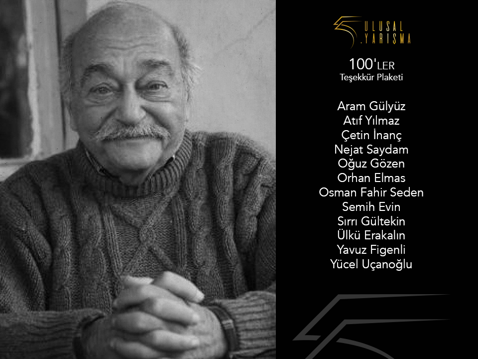

100’ler Teşekkür Plaketi

Yeşilçam, ismini her ne kadar Beyoğlu’ndaki bir sokaktan alsa da Amerikan sinemasının genelini ifade eden Hollywood sözcüğü gibi Türkiye’nin belirli bir döneminde üretilen yerli filmleri ifade eder. Bu filmler çoğu zaman yokluk içerisinde, büyük imkânsızlıkların ve yetersizliklerin gölgesinde üretilir. Filmlerin kaydedildiği negatiflerin bile kotayla getirildiği dönemlerde Yeşilçam’da yılda üç yüz filmlik bir üretim gerçekleştirilir.
Lütfi Akad, Metin Erksan, Halit Refiğ, Atıf Yılmaz ve Memduh Ün gibi Yeşilçam’ın “ustasız ustaları” bir ülke sinemasının tarihini yazarken, filmleri aracılığıyla seyircilerle de özel bir bağ kurmayı başarırlar. Onların hikâyeleri kolektif bir tarihin öyküsünü farklı formatlarda bizlere taşırken, aynı zamanda duygu dünyamızı da anlamlandırırlar. Kuşaklar, bu filmlerle büyür ve öğrenir. Filmler, kuşakların hikâyesine dönüşür. Haşmet İbriktaroğlu, Turist Ömer, Sabiha, Yaşar Usta, İnek Şaban, Hafize Ana ya da Asya… Bu isimler film karakteri olmaktan çok öteye geçmiştir; hikâyemizin bir parçasıdırlar aynı zamanda. Yeşilçam karakterleri günümüz seyircisinin belirli duygularını cisimleştirirler, onların anlatıcılığına soyunurlar. Zamansız ve mekânsız durumları ifade ederler. Direnişin, karşı koyuşun, dayanışmanın ve bütün bunlardan önemlisi insani değerlerin gerekliliğini her fırsatta dile getirirler.
Bu yolculukta bizleri zenginleştiren hikâyelerin bir de isimsiz kahramanları vardır. Aşk filmlerinin unutulmaz yönetmeni Nejat Saydam, salon filmlerinin zarif ve duygu yüklü anlatıcısı Ülkü Erakalın, hareketli filmlerin aranan isimlerinden Osman Fahir Seden, muzip komedilerin yaratıcısı Aram Gülyüz, avantür filmlerde ustalaşan Çetin İnanç, Türkiye’nin Ed Wood’u Oğuz Gözen, “konfeksiyon film” tabirini literatüre sokan Semih Evin, akıl almaz aksiyonlara imza atan Yücel Uçanoğlu ve Yavuz Figenli, sıradan ve yalın insan hikâyelerinin istikrarlı anlatıcısı Sırrı Gültekin ve sinemanın pek çok alanında görev yapan Orhan Elmas gibi… Bu yönetmenlerin her biri kariyerlerinde yüz filmi aşan, yüzden fazla filme imza atarak Türkiye sinemasının bütününde büyük emeği geçmiş isimlerdir.
Sinema tarihini belirli kişiler ve filmler üzerinden basitleştirme eğilimi sinemanın görünmez kahramanlarının unutulmasına neden olur. Ulusal Yarışma bu sene ödül gecesinde Yeşilçam’da yüzler kulübüne giren on iki “görünmez kahramana” plaket vererek onları onurlandırmayı amaçlıyor. Ödül gecesinde Yücel Uçanoğlu, Çetin İnanç ve Yavuz Figenli’ye plaketleri takdim edilecek. Aramızdan ayrılan Aram Gülyüz, Atıf Yılmaz Batıbeki, Nejat Saydam, Oğuz Gözen, Orhan Elmas, Osman Fahir Seden, Semih Evin, Sırrı Gültekin ve Ülkü Erakalın’ın ise yakınları yönetmenlerin ödüllerini alacak.